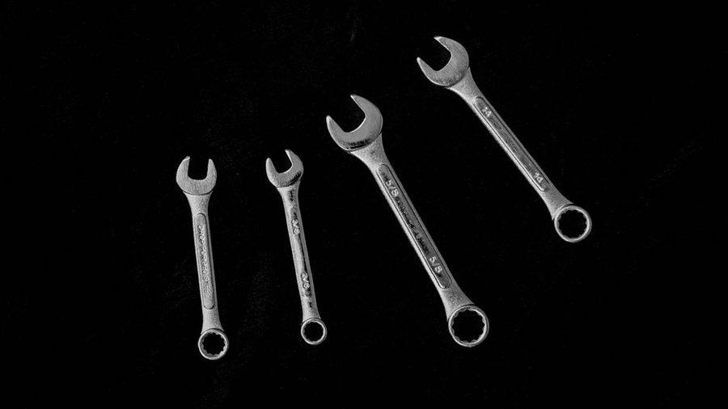

The End-of-Day Count Habit
Five minutes before the lights go off does more for an inventory than any spreadsheet run once a quarter.

The bulb over the bench hangs on a pull chain, and the chain keeps swinging for a few seconds after you let go. That swing is roughly the shape of the closing count: one pass along the wall, left to right, reading the painted outlines instead of the tools. It takes about five minutes on a slow night and closer to three on a night when nothing moved. It is the least clever thing that happens in this six-square-metre shop, and it is the only routine that has stayed in place for years without anyone having to defend it.
Why the last five minutes and not the first five
A count run in the morning tells you what is missing. A count run at closing tends to tell you where it went. Those are not the same sentence, and the second one is worth far more.
At six in the evening the day is still legible. You can picture your own hands: the block plane went out to the doorway to trim a sticking door, and it is probably sitting on the sill where you set it down. The 10 mm combination wrench came off the wall for the bench vise and never came back because the phone rang. None of that survives the night. By morning the memory has flattened into a general sense that things were busy, and a gap on the wall becomes a puzzle with no first move.
The other half of the timing is social. At closing, whoever borrowed the thing is often still on site — pulling a coat on, loading a van, standing in the doorway saying goodnight. One question answers what an hour of searching would not. In the morning that person is somewhere else, and the tool is in the footwell of a car you cannot see.
A count is a record of what the wall looked like. It is not a verdict about where a tool went.
It has to be short enough to survive a bad day
Any routine that only runs on good days is decoration. The count earns its keep on the evening a joint blew out, the delivery came late, and you are already twenty minutes past when you meant to leave. On that evening, a five-minute pass still happens. A fifteen-minute pass does not — and that is exactly the evening when tools get set down in strange places by people in a hurry.
So the length is not a preference, it is a design constraint. Everything that would push the count past five minutes gets cut. No opening of boxes. No counting fasteners. No tidying, because tidying is an unbounded task and it will eat the count from the inside. If the wall is arranged so the count is fast, the count survives; if the count keeps slipping past ten minutes, the wall is wrong, not the person doing the counting. That is also the argument for keeping the daily-use tools on hooks rather than in a drawer — a drawer has to be opened and read, which is slow enough to quietly hide a loss for weeks.
The sequence
The order matters mostly because an order exists at all. Doing it the same way each night turns a decision into a groove.
- Stand at the left end of the wall. Always the same end. The count is a strip of wall read like a line of text, not a scan of the room.
- Read outlines, not tools. The eye is looking for a painted shape with nothing on it. This is faster than recognising each tool, and it is the whole reason for painting the silhouettes in the first place.
- Sweep the bench before calling anything missing. Most gaps end here. The tool is under an offcut, or behind the vise, or in the shavings.
- Ask before assuming loss. If someone is still on site, ask. It costs one sentence and closes most of the remaining gaps.
- Write the gap down and stop. Name, date, last place you remember it. Then pull the chain.
Record the gap; do not chase it
This is the part that people quietly refuse to do, and it is the part that makes the habit work. When the outline is empty, the instinct is to go looking. Ten minutes later you are in the corner cupboard with a torch, the count has stopped being a count, and tomorrow you will skip it because last night it took half an hour.
Writing the gap is the whole job. The log is where a search decision gets made later, with a cool head and more information: a tool missing one evening is almost always motion, while the same outline empty three closings running is something else. I keep those entries in Toolcount, my own small log for exactly this — a name, a date, and whether the outline was empty. Anything more elaborate than that tends to stop getting filled in.
Reading what the wall is telling you
After a few weeks the gaps start to sort themselves into recognisable types. This is roughly how I read them now.
| What the wall shows | What it usually means | What I do at the wall |
|---|---|---|
| Empty outline, bench still loaded | The tool is in the mess in front of you | Sweep the bench first; write nothing yet |
| Empty outline, bench clear, someone still on site | It left the room in a hand | Ask once, then log whatever the answer is |
| Tool present but off its own outline | Returned in a hurry, or by someone else | Reseat it; no entry needed |
| Same outline empty three closings running | Not motion any more | Move it from the day log to the open list |
| Empty outline and nobody remembers it | The trail is cold | Log the last closing where it was present and stop guessing |
Where the habit tends to break
Not from laziness, usually. It breaks because it gets bigger. Someone adds a second wall, or a rule about checking blade condition, or a monthly reconciliation squeezed into the same five minutes. Each addition seems small. Together they turn a groove into a chore, and a chore gets negotiated with at the end of a long day.
The other failure is the opposite: the count becomes a ritual with no record. You walk the wall, notice nothing unusual, and go home. Two months later a tool is gone and there is no date to anchor the search to. Walking the wall without writing the gap is a nice moment at the end of the day, but it is not an inventory.
A note on scope
This describes one small shop's routine, not a standard for anyone else's. Shops differ in size, staffing, and what a missing tool actually costs, and a habit built for six square metres may make no sense in a room ten times that. Read it as a worked example and adapt freely.
Read also